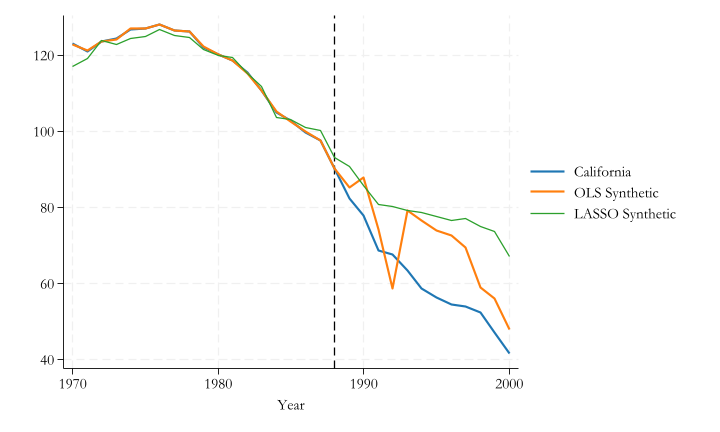
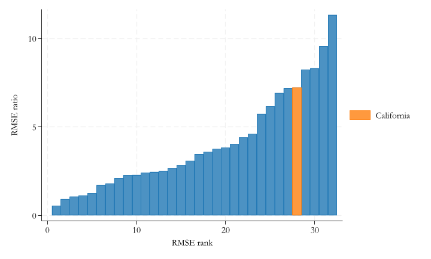
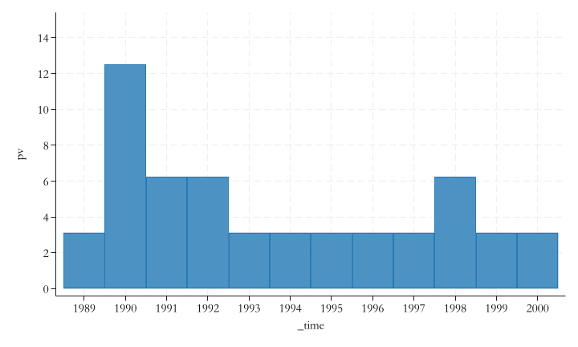

Unfortunately, we only observe one outcome. You are either treated or untreated…So how do we fix this?
You need to find counterfactuals so both observed (\(X\)) and unobserved (\(e\)) are the same (or close) between treated and contro group.
RCT: Gold Standard, You randomize treatment and compare means. If correctly done, \(X's\) and \(e's\) will be comparable across groups, and ATE’s can be identified.
Reg + FE: For other cases, we just work with observational data. First method, Regression (OLS?). Adding covariates controls for their presence, working as a pseudo balancing approach.
You could also add fixed effects, to control for factors that are fixed (across time), but you do not observe. (requires Panel data).
It works if Treatment occurs at the same time for everyone treated. and if Unobserved are “fixed”
Instrumental variables: 2nd Best to RCT. It uses IV to generate a small randomization process that can be used for estimating ATT. Technically it compares the effect among those potentially affected by the random instrument. Requires Randome instrument, and no-defiers. Its a Local ATE
Matching and Reweigthing. Similar to Regression, but better to balance characteristics. The goal is to find units with similar characteristics for all treated units. You can estimate ATE, ATT or ATU. Depends on how well Matching is done
RDD. If you have data where treatment depends on a single variable and a threshold, you can use this to identify TE for those “Near” the threshold. They Key assumption, treatment assigment is as good at random at the threshold.
DD. Differences in differences uses variation across time and across individual to identify treatment effects. Under PTA, and SUTVA
Dif. within individuals eliminates common time trends, Dif across time, eliminates individual fixed effects. DD provide you with ATT’s for the treated, after treatment.
Can be generalized to Many periods and many groups, but requires stronger assumptions (no anticipation and no change in treatment status), and further aggregation.
Or combined with Matching for even better results.
Synthetic Control: Special case
As previous Cases, Synthetic control aims to identify treatment constructing appropriate “counterfactuals”.
It is said that Synthethic controls may be even MORE credible methodology, because the treated group is by construction Exogenous…but how?
The treated group is a Case Study.
An isolated event or unit that is affected by a treatment, and should not affect other units !
In this sense, the treatment is exogenous, because it affected a single unit.
But what about the counterfactual?
In other methods (in particular Matching), our “conterfactual” mean to look for observations that had the same characteristics as the treated observation.
Some times, we needed to settle to use a single “bad” control, because we couldnt find one better. (people are very different).
Using Stricter criteria would make it unfeasible.
More relax and we have lots of biases.
SC is different. You have MANY controls, so why settle with only one?
SC is like Dr Frankenstein, where you “build” a single comparison group by averaging information of all controls.
You build the synthetic control getting “weighted averages”.
But…we assume you can see all units across time (panel data)
This is a very popular method
Where has this method been used:
effects of right-to-carry laws (Donohue et al., 2019),
legalized prostitution (Cunningham and Shah, 2018),
immigration policy (Bohn et al., 2014),
corporate political connections (Acemoglu et al., 2016),
taxation (Kleven et al., 2013),
organized crime (Pinotti, 2015)
Just to name a few.
Assumptions:
The Donor Pool should be a good match for the treated unit. Thus, the synthethic control should be Zero before treatment.
This is similar to PTA, but stronger. Before treatment, there should be no difference between Treated and synthetic control
SUTVA. Only the treated group is affected by treatment. The control group should be unaffected (no spill over effects).
There should be NO other “event” in the period of analysis. (Thus we only capture treatment impact)
How does it work.
Recall, we want to estimate TE for the single untreated unit:
\[ATT_{1t} = Y_{1t}- Y(0)_{1t}
\]
but we do not observe \(Y(0)_{1t}\). We only know that before treatment
\[ATT_{1t} = Y_{1t}- Y(0)_{1t}=0\]
We could construct a synthetic control:
\[\hat Y_{1t}(0) = \sum_{i = 2}^N w_i Y_{it}
\]
At the very least, the weights \(w\) should be such that before treatment (\(G\)):
(option xb assumed; fitted values)
(32 missing values generated)
(options xb penalized assumed; linear prediction with penalized coefficients)

What else to keep in mind
With More Variables, the goal is still to be able to choose \(w's\) that best explain the observed outcomes (and characteristics) of the “treated unit”.
However, we also need to impose restrictions on Weights:
\(w_j \geq 0\) Weights cannot be negative.
\(\sum w_j =1\) They should sum up to 1.
\(v_m\) can be used to increase, or reduce the relative importance of factors in the model. (lower bound at 0) The constant is zero.
This is a maximization problem with constrains. Restrictions ensure the prediction is based on a “convex” set, avoiding extrapolation.
Is it noise? or Causal?
When using SC, you essentially have a sample \(n=1\) to estimate an effect. How do you know that effect is significant? and not just noise?
You can do a randomization experiment! and answer:
“how unusual is this estimate under the null hypothesis of no policy effect?”.
How does this work?
Randomization
Excluding the treated unit, estimate the pseudo effect of every other unit in the dataset. These are placebos, and you should expect the effect to be zero for them…but you may see some positive and negative effects.
This may be consider the sampling distribution of the estimated effect.
Calculate the pre- and post- treament Root mean squared prediction error for all units (treated and placebos).
Pre-RMSPE provides a statistic of how well the model fits before treatment.
Post-RMSPE provides a statistic of how unusual is the outcome after the “treatment date”. The largest it is, the more unpredictable (or stronger treatment effect) it would be.
forvalues i = 1/39 {if (sef`i'a[1])<(2*sef3a[1]) {matrix rt=nullmat(rt)\[`i',sef`i'b[1]/sef`i'a[1]] }}svmat rtegen rnk=rank(rt2)twobar rt2 rnk || bar rt2 rnk if rt1==3 , ///legend(order( 2 "California")) ///ytitle(RMSE ratio) xtitle(RMSE rank)
number of observations will be reset to 32
Press any key to continue, or Break to abort
Number of observations (_N) was 31, now 32.

p-values
gen rnk2=0forvalues i = 1/39 {if (sef`i'a[1])<(2*sef3a[1]) {local t = `t'+1replace rnk2=rnk2+(tef`i'<=tef3) }} gen pv=rnk2*100/`t'twobar pv _time if _time>1988 & rnk2<32, ylabel(0(2)15) xlabel(1989/2000)
(10 real changes made)
(6 real changes made)
(32 real changes made)
(5 real changes made)
(9 real changes made)
(3 real changes made)
(5 real changes made)
(4 real changes made)
(6 real changes made)
(4 real changes made)
(4 real changes made)
(8 real changes made)
(5 real changes made)
(4 real changes made)
(8 real changes made)
(3 real changes made)
(5 real changes made)
(8 real changes made)
(5 real changes made)
(5 real changes made)
(7 real changes made)
(2 real changes made)
(4 real changes made)
(4 real changes made)
(2 real changes made)
(6 real changes made)
(3 real changes made)
(6 real changes made)
(8 real changes made)
(5 real changes made)
(4 real changes made)
(6 real changes made)

Other Falsification Tests
Change of treatment Year.
In the manual implementation you may want to change the treatment year (to an earler point). One should see no effect between false treatment date and the true to be zero.
Using synth (Stata) you may want to drop some of the controls, so only “pre-false” treatment data is used.
Look also into synth_runner
Change of Outcome.
One can estimate the effect on alternative outcomes. No effect should be estimated.
Conclusions
The basic methodology presented here differs from other strategies because one uses a single treated unit, with pletora of treated groups.
Instead of comparing single units with the treated group, it aims to compare a weighted average “synthetic control” to do so.
It will work better than matching because you are focusing on getting the best “weighted” group for a single unit.
But this methodology is still under development, with extensions toward using dissagregated data, or a combination with DD approaches.
This may change how much more one can do with the method